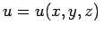

zum Extremum macht, wenn y(x) eine bestimmte, genau charakterisierte Funktionenklasse durchläuft. Dabei können für die Funktionen y(x) und deren Ableitungen noch zusätzliche Bedingungen, sogenannte Rand- und Nebenbedingungen, gestellt werden.
| (10.3) |
| (10.5) |
Die gesuchte Funktion ist , und  stellt einen ebenen Integrationsbereich dar.
stellt einen ebenen Integrationsbereich dar.
| (10.6) |
Die gesuchte Funktion ist , und R stellt einen räumlichen Integrationsbereich dar.
Für die Lösungen eines Variationsproblems können zusätzliche Randbedingungen vorgegeben sein, die im eindimensionalen Fall an den Intervallrändern a und b bzw. auf dem Rand des Integrationsgebietes  im zweidimensionalen Fall gelten sollen. Darüber hinaus können den Lösungen noch verschiedene Arten von Nebenbedingungen, z.B. in Integralform oder als Differentialgleichung vorgeschrieben sein.
im zweidimensionalen Fall gelten sollen. Darüber hinaus können den Lösungen noch verschiedene Arten von Nebenbedingungen, z.B. in Integralform oder als Differentialgleichung vorgeschrieben sein.
Ein Variationsproblem heißt von erster bzw. höherer Ordnung je nachdem, ob die Funktion F im Integralausdruck der Variationsaufgabe nur die erste Ableitung y' oder höhere Ableitungen der Funktion y enthält.
| (10.7) |